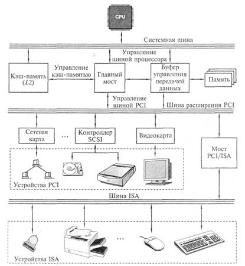

Подготовка к экзамену по ТСИ
Архитектура шины PCI
Шина PCI была разработана Intel для процессоров pentium и представляля собой совершенно новую шину. В ней был заложен принцип применения мостов, которые осуществляли связь мужде шиной PCI и другими типами шин. В шине PCI есть Bus Mastering, тоесть способность внешнего устройства управлять шиной при перессылке данных без участия процессора, тем самым позволяет процессору сосредоточится на других задачах пока происходит процесс перессылки. В современных материнских платах тактовая чистота PCI задаётся как половина тактовой частоты системной шины. Если системная шина 66 Ггерц, то PCI 33 Ггерц соответственно. В наше время данная шина стала стандартом среди шнин ввода-вывода.